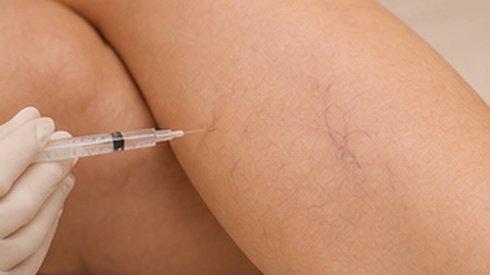

JOURNAL Vasos e circulação
PEIM e escleroterapia são a mesma coisa? Entenda a diferença de finalidade
O nome PEIM é usado para um procedimento estético injetável em microvasos. Escleroterapia também envolve agentes injetáveis, mas referências profissionais podem distingui-la pelo objetivo clínico. Saber a finalidade e quem avalia o caso importa antes de comparar os termos.

Uma semelhança técnica não torna a finalidade igual
Os dois termos podem aparecer em conversas sobre vasos e injeções, mas não devem ser tratados como sinônimos sem esclarecer a queixa, o objetivo e a avaliação. Aparência de microvasos não é, por si só, diagnóstico de doença venosa; sintomas ou vasos de maior calibre podem exigir avaliação de saúde apropriada.
O Parecer nº 3/2026 do Conselho Federal de Enfermagem descreve, dentro da análise de competência da Enfermagem, o PEIM como procedimento de finalidade estética e diferencia a escleroterapia como tratamento de condição patológica. Esse parecer é um documento de escopo da Enfermagem — não define a competência de outras profissões nem substitui as regras do respectivo conselho profissional.
O que perguntar antes de considerar um procedimento
- Qual é o nome exato do procedimento proposto e qual objetivo se pretende alcançar?
- A avaliação identificou apenas uma queixa estética ou há sintomas que precisam de investigação vascular?
- Quem fará a avaliação e o procedimento, e qual é a sua habilitação e escopo profissional para essa atividade?
- Qual produto será usado, qual sua finalidade e situação regulatória, e quais riscos e alternativas serão explicados?
- Quais cuidados escritos e canal de contato estarão disponíveis depois?
Não aceite que a semelhança do instrumento, da região ou da via de aplicação substitua a explicação da indicação e da habilitação profissional.
Quando uma queixa deixa de ser apenas estética
Dor persistente, inchaço, alteração de pele, ferida, sangramento ou mudança importante em uma perna merecem avaliação clínica; uma página sobre PEIM não consegue determinar a causa nem indicar exame. Se a equipe suspeitar de doença venosa, a avaliação deve seguir o profissional e o contexto adequados, em vez de presumir que um procedimento estético responda à queixa.
Produto e escopo profissional são verificações diferentes
A Anvisa orienta confirmar o produto e as condições sanitárias do estabelecimento e esclarece que não regulamenta o exercício de cada profissão. Portanto, verificar um produto ou encontrar um procedimento descrito online não responde, sozinho, quem pode realizá-lo em cada categoria. Para dúvidas sobre habilitação, consulte o conselho profissional pertinente e as regras atuais.
Este artigo não avalia a legalidade de um caso, não conclui qual profissional pode realizar um procedimento específico e não descreve o produto ou protocolo desta clínica.
Fontes oficiais e limites
Conteúdo educativo. O parecer do Cofen citado trata da Enfermagem e não deve ser extrapolado para outras profissões; confirme as regras aplicáveis à categoria do profissional envolvido.